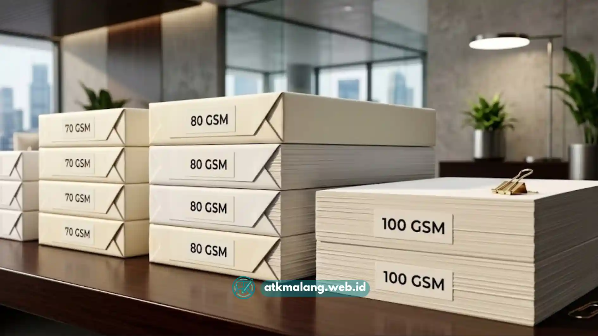

Kertas HVS grosir Malang adalah pilihan utama kantor dan sekolah yang butuh stok kertas cetak dalam jumlah besar dengan harga lebih hemat. Memilih kertas yang tepat membutuhkan perhatian pada gramatur, ukuran, dan reputasi penjual.
- Kertas HVS grosir cocok untuk kebutuhan cetak volume tinggi karena harga per rim lebih rendah dibanding eceran.
- Gramatur 70 gsm dan 80 gsm adalah pilihan paling umum untuk printer kantor sehari-hari.
- Ukuran A4 dan F4 (folio) adalah dua ukuran yang paling sering dibutuhkan kantor di Malang.
- Kualitas kertas memengaruhi hasil cetak, kelancaran mesin printer, dan risiko kertas macet (paper jam).
- Memilih supplier yang tepat membantu menjaga pasokan kertas tetap stabil dan harga tetap kompetitif.
Daftar Isi
Apa Itu Kertas HVS dan Mengapa Banyak Dicari dalam Bentuk Grosir?
Kertas HVS adalah singkatan dari Houtvrij Schrijfpapier, yaitu kertas tulis bebas serat kayu kasar yang permukaannya halus. Jenis kertas ini sangat cocok untuk mencetak dokumen, tugas, hingga laporan di ekosistem Alat Tulis Kantor.
Permintaan kertas HVS dalam bentuk grosir terus tinggi karena kebutuhan cetak di lingkungan kantor, sekolah, dan percetakan bersifat rutin dan dalam jumlah besar.
Membeli secara grosir memungkinkan pembeli mendapatkan harga per lembar yang jauh lebih murah dibanding membeli eceran per rim di toko kecil.
Di Malang, permintaan kertas HVS grosir banyak datang dari perkantoran, instansi pendidikan, biro jasa, dan usaha percetakan yang membutuhkan pasokan rutin setiap bulan.
Karakteristik kota Malang yang memiliki banyak kampus, sekolah, dan perkantoran menjadikan kebutuhan kertas HVS relatif stabil sepanjang tahun.
Bagaimana Cara Memilih Kertas HVS yang Berkualitas untuk Printer Kantor?
Kertas HVS berkualitas untuk printer kantor dipilih berdasarkan gramatur yang sesuai, permukaan yang rata, serta tingkat kecerahan (brightness). Kertas yang baik nyaman di mata saat dibaca maupun dicetak dua sisi.
Beberapa aspek yang perlu diperhatikan saat memilih kertas HVS grosir sebagai bagian dari belanja Alat Tulis Kantor antara lain:
- Gramatur (ketebalan kertas). Gramatur diukur dalam satuan gram per meter persegi (gsm). Semakin tinggi gramatur, kertas semakin tebal dan kaku.
- Brightness atau tingkat putih kertas. Kertas dengan brightness yang stabil menghasilkan cetakan yang lebih tajam dan nyaman dibaca dalam waktu lama.
- Kehalusan permukaan. Permukaan yang terlalu kasar dapat memengaruhi hasil cetak, terutama pada printer laser.
- Konsistensi ukuran. Kertas yang dipotong presisi akan mengurangi risiko kertas macet saat dicetak dalam jumlah banyak.
- Reputasi merek atau pabrik. Merek yang sudah dikenal umumnya memiliki standar produksi yang lebih konsisten dari batch ke batch.
Kertas dengan kualitas rendah cenderung menimbulkan debu kertas yang lebih banyak, sehingga berisiko mempercepat kotornya komponen printer, terutama pada printer laser yang digunakan secara intensif.

Memilih kertas HVS yang tepat mengurangi risiko kerusakan pada mesin printer kantor.Berapa Gramatur Kertas HVS yang Cocok untuk Kebutuhan Kantor?
Gramatur 70 gsm dan 80 gsm adalah pilihan yang paling umum digunakan untuk kebutuhan cetak kantor sehari-hari untuk operasional dan Alat Tulis Kantor rutin.
Sementara gramatur di atas 100 gsm biasanya dipakai untuk dokumen resmi atau materi presentasi.
Berikut gambaran umum penggunaan gramatur kertas HVS:
- 70 gsm: cocok untuk cetakan internal, draf dokumen, dan kebutuhan volume tinggi dengan anggaran terbatas.
- 80 gsm: menjadi standar umum kantor karena teksturnya lebih tebal namun tetap ekonomis untuk pemakaian rutin.
- 100 gsm ke atas: biasanya dipakai untuk dokumen resmi, sertifikat, atau materi yang membutuhkan kesan lebih formal.
Pemilihan gramatur sebaiknya disesuaikan dengan jenis printer yang digunakan, karena printer tertentu memiliki batas ketebalan kertas maksimal yang dapat diproses.
Apa Perbedaan Ukuran A4 dan F4 pada Kertas HVS Grosir?
Ukuran A4 memiliki dimensi 210 x 297 mm dan umum digunakan untuk dokumen internasional. Sedangkan ukuran F4 atau folio memiliki dimensi yang lebih panjang dan banyak dipakai untuk dokumen administrasi khas Indonesia.
Kantor dan instansi di Malang umumnya menyetok kedua ukuran ini sekaligus karena kebutuhan dokumen yang berbeda-beda sebagai kelengkapan utama Alat Tulis Kantor.
Dokumen resmi seperti surat dinas, kontrak, atau berkas administrasi pemerintahan sering menggunakan ukuran folio. Sementara laporan, proposal, dan dokumen internasional lebih sering menggunakan ukuran A4.
Saat membeli grosir, penting untuk memastikan rasio jumlah A4 dan F4 sesuai kebutuhan riil kantor agar stok tidak menumpuk pada satu ukuran saja.
Apa Saja Faktor yang Memengaruhi Harga Kertas HVS Grosir di Malang?
Harga kertas HVS grosir di Malang umumnya dipengaruhi oleh gramatur, jumlah pembelian, merek kertas, serta fluktuasi harga bahan baku pulp di tingkat produsen.
Faktor-faktor utama yang memengaruhi harga antara lain:
- Volume pembelian: Pembelian dalam jumlah besar (per dus atau per palet) umumnya mendapatkan harga per rim yang lebih rendah dibanding pembelian satuan.
- Merek dan kualitas kertas: Merek dengan reputasi baik dan kualitas konsisten cenderung dijual dengan harga sedikit lebih tinggi.
- Fluktuasi harga bahan baku: Harga pulp dan kondisi rantai pasok kertas secara umum dapat memengaruhi harga jual di tingkat distributor.
- Lokasi dan biaya pengiriman: Jarak pengiriman dari gudang distributor ke lokasi pembeli turut memengaruhi total biaya yang dikeluarkan.
- Musim kebutuhan: Permintaan cenderung meningkat menjelang tahun ajaran baru atau periode akhir tahun anggaran instansi, yang memengaruhi ketersediaan dan harga.
Membandingkan penawaran dari beberapa distributor kertas HVS grosir di Malang dapat membantu pembeli mendapatkan harga yang paling sesuai dengan anggaran belanja Alat Tulis Kantor Anda.
Apa Kesalahan Umum yang Sering Terjadi Saat Membeli Kertas HVS Grosir?
Kesalahan paling umum saat membeli kertas HVS grosir adalah hanya berfokus pada harga termurah tanpa memeriksa kualitas dan konsistensi kertas dari batch ke batch.
Beberapa kesalahan lain yang sering terjadi antara lain:
- Tidak memeriksa sampel kertas terlebih dahulu: Kertas yang terlihat bagus di foto belum tentu sesuai dengan kondisi fisik aslinya.
- Mengabaikan kapasitas gudang penyimpanan: Kertas yang disimpan di tempat lembap berisiko cepat rusak atau bergelombang.
- Tidak menanyakan kebijakan retur: Hal ini penting apabila di kemudian hari ditemukan kertas cacat produksi dari supplier Alat Tulis Kantor.
- Membeli dalam jumlah terlalu besar: Jika tanpa memperkirakan kecepatan pemakaian, ini bisa membuat kertas tersimpan terlalu lama sebelum habis digunakan.
- Tidak mempertimbangkan reputasi distributor: Distributor yang berpengalaman umumnya lebih dapat diandalkan dalam hal ketepatan pengiriman dan kualitas produk.
Tips Praktis Sebelum Membeli Kertas HVS Grosir di Malang
Sebelum memutuskan membeli kertas HVS grosir, sebaiknya pembeli menghitung kebutuhan bulanan, membandingkan beberapa distributor, dan memastikan kertas disimpan pada kondisi yang sesuai agar kualitasnya tetap terjaga.
Beberapa tips yang dapat diterapkan dalam menekan anggaran Alat Tulis Kantor:
- Hitung rata-rata kebutuhan kertas per bulan agar pembelian grosir tidak berlebihan maupun kurang.
- Minta sampel kertas sebelum melakukan pembelian dalam jumlah besar.
- Simpan kertas di ruangan kering dan tidak lembap untuk mencegah kertas bergelombang.
- Bandingkan harga dari beberapa distributor sebelum menentukan pilihan akhir.
- Pertimbangkan hubungan jangka panjang dengan satu distributor terpercaya untuk memudahkan proses pemesanan ulang.
Memilih kertas HVS grosir Malang yang tepat membutuhkan pertimbangan pada gramatur, ukuran, kualitas permukaan, serta reputasi distributor.
Pembeli yang menyesuaikan kebutuhan riil kantor dengan spesifikasi kertas yang tepat akan mendapatkan hasil cetak yang konsisten sekaligus efisiensi biaya jangka panjang.
Untuk kebutuhan spesifik seperti kertas untuk sekolah atau kertas continuous form untuk invoice, silakan lihat pembahasan lebih lanjut pada artikel terkait di bawah.